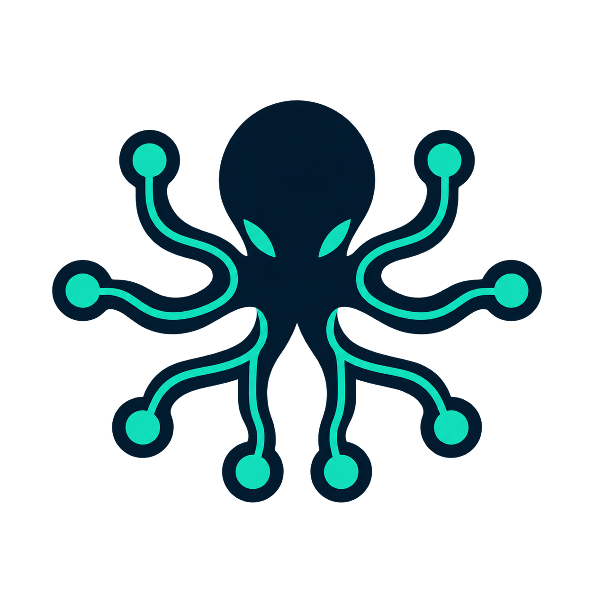

AVAILABLE NOW↗
MQTT 3.1.1
The first production path: persistent sessions, JSON codec, QoS 1 commands, telemetry, command results, and reported shadow.
- Paho
- mTLS
- QoS 1
- JSON

OCTOPUSv1.0OPEN-SOURCE AIOT STARTER
Start with the MQTT path that already works. Add cloud, HTTP/CoAP, and industrial edge protocols through one clean plugin boundary—without rebuilding the platform around every device.
Clear status, no protocol theatre. MQTT is built in; the rest are labeled as adapters, plugin contracts, or edge patterns.
transport: mqtt
codec: json
delivery: qos1
state: readyPROTOCOL MAP
Direct connections stay direct. Industrial protocols stay close to the equipment. Every path becomes the same identity-aware message before it reaches the rest of the platform.
The first production path: persistent sessions, JSON codec, QoS 1 commands, telemetry, command results, and reported shadow.
Keep cloud-provider routing behind the same command and message ports, so the domain does not inherit broker-specific behavior.
Transport and codec contracts are separate. Add a connector without teaching telemetry, shadow, or commands about the wire protocol.
Native SDKs and serial drivers belong in an edge plugin. Normalize there, then send a stable device envelope upstream.
One new protocol should add one plugin, not eight rewrites. Identity, telemetry, state, commands, alarms, analytics, storage, and tenancy keep their existing boundaries.
Read the plugin design ↗AI-READY, NOT AI-WASHED
An agent needs more than raw sensor values. Octopus assembles identity, current state, recent events, alarms, and permitted actions into a clean operational boundary.
Suggested actionsetSpeed(1320 rpm)
Concept preview: v1.0 provides the boundary, not a bundled autonomous agent.
Normalized telemetry and versioned state instead of a pile of broker messages.
Agents use the same authorized, durable command path as every human operator.
Every read, event, cache key, and command carries the customer boundary.
LOCAL FIRST
No closed demo cloud. The Java services, local infrastructure, Kubernetes manifests, design notes, and tests live in one Apache-2.0 repository.
# clone the platform
$ git clone https://github.com/fishered/octopus.git
$ cd octopus
# start local infrastructure
$ docker compose up -d
✓ postgres · redis · kafka · influxdb · mqtt
# verify every boundary
$ ./mvnw verify
✓ build readyTHE FOUNDATION ALREADY IN v1.0
BUILD THE NEXT CONNECTOR